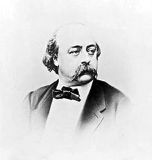
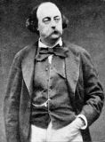
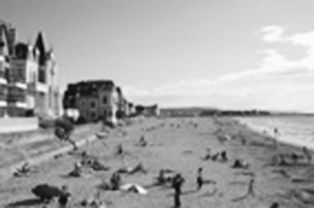
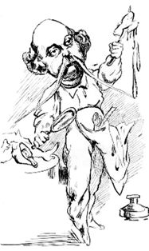

ÖNSÖZ
"Çağımın salaklığına karşı, beni boğan nefret dalgaları hissediyorum. Ağzıma kadar bok geliyor, fırlayan bir fıtık gibi. Ama ben bu boku saklamak istiyorum, katılaştırmak, sertleştirmek. 19. yüzyılın yüzünü sıvayacağım bir macun yapmak istiyorum, Hint pagodalarını tezekle nasıl bezerlerse öyle..."
Louis Bouilhet'ye mektup, 1855
Kitaba ilişkin
Bu kitapla ilgili birkaç okuma yapmak mümkün. Birincisi, şüphesiz, Fransız ve dünya edebiyatını, tarzı ve konulara yaklaşımıyla kökten etkilemiş, önemli bir yazarın ilk gençlik eserini okumak; sonraki eserlerinin izlerini sürmek, düşünce kalıplarının temellerini araştırmak ve bildik bir şahsiyetin, gençliğinden ötürü kendini daha saflıkla ele verdiği satırlardaki insani yönlerini keşfetmek.
İkincisi, daha "arkeolojik" bir çalışma: On yedi yaşındaki Gustave'ın, 19. yüzyılın başındaki, kentsoylu bir ailenin aykırı ancak yine de sosyal çevresine ait olan dünyasını anlamak. Gustave marjinal, Gustave tatminsiz, Gustave hayal dünyasında yaşıyor, Gustave âşık oluyor, Gustave kahramanlık hikayeleri düşlüyor: Gustave, olmaya çalışıyor.
Edebiyatla ve tarihle ilgili şöyle genel bir kanı var: Edebiyat bildiğimiz klasiklerden, tarih ise Osmanlı beylerinin ve imparatorlarının fetihlerinden oluşmakta. Oysa, bütün bunlara, en iyi ihtimalle mihenk taşları, daha doğru bir yaklaşım benimsendiğindeyse tarihsel veya edebi imgeler, demek gerekiyor. Son on yılda ülkemizde de tarihsel konuları işleyen daha çok eser yayınlandığı için, bunu daha iyi anlayabiliriz. Mahmut Şevket Esendal, Halit Fahri Ozansoy veya Reşat Ekrem Koçu'nun açtığı yolda ilerleyen birçok yazarımız var. Koçu, döneminde tarihi vulgarize ettiği için eleştirilmesine rağmen, tarihin güncel dokusunu ben ilk onun kitaplarında hissettim. Sözünü ettiğim işte o tarih ve edebiyat: Edebiyat sadece bilinen şöhretli eserler değil, çok daha canlı, kanlı, topluma işlemiş bir varlıktır. Edebiyat, yazıyla ifade edilen duygu ve düşüncelerdir. Herkes mektup yazabilir, günlük tutabilir, aşk şiirleri ya da roman kaleme alabilir! Bize kadar gelen eserlerin sahiplerinin, edebi istidatlarından, müthiş dirayetlerinden ve şaşırtıcı fırsatçılıklarından başka, azımsanmayacak bir şansa sahip oldukları da su götürmez bir gerçektir. Tarihsel determinizmi tek yönlü bir tanrı gibi algılamayalım. Hepimiz kaplumbağa yavruları gibiyiz. Kaçımızın hayatta kalacağıyla ilgili genel veriler olsa da, cemiyetimizi belirleyen sadece yumurta sayısı ve su sıcaklığı değildir. Şansımıza, elimizde, bir önceki asrın kaplumbağa yavrularından birinin anıları var. Ne büyük şans! Bu ikinci okuma belki de birincisinden daha önemlidir.
Elinizde tuttuğunuz eser bir gençlik eseridir (1838, Gustave on yedi yaşında). Flaubert'in olgunluk dönemi eserlerine kıyaslarsak (Madam Bovary, 1858. Flaubert otuz yedi yaşında) tabii ki daha toy, oturmamış ve zayıftır. Ancak topluma yaklaşımının korkusuzluğunu ve yalnızlığı bir ibadet olarak uygulamaya başlamasını burada görüyoruz: Gustave kişiliğini değiştirmeyi o derece büyük bir dirençle reddediyor ki, nice badirelerden sonra toplumsal değişimin memurlarından ve hatta mimarı değilse de, yapı ustalarından biri olacak.
Ama, on yedi yaşında bir delikanlı yazdı diye eseri de yabana atmayalım. Bir Delinin Anıları'nı okuduğunuzda ilk hissedeceğiniz şeylerden biri, yazıdaki çağdaşlıktır. 19. yüzyılın ortalarında yazılmış bir metin bu sayın okur! Benim dili çağdaşlaştırmak gibi özel bir çabam olmadı. Gustave daha on yedi yaşındayken, çağının hayli ilerisinde bir dil ve düşünce dünyası yaratmayı başarmış. Benim karşılaştığım temel güçlük de, dildeki bu modernlik oldu: Flaubert bugünkü modern Fransızca'yla örtüşen bir dil kullanıyor. Fransızca'da bizimkinde olduğu gibi köklü kopuşlar hiç olmadığı için, Bir Delinin Anıları'nın 19. yüzyılda yazılmış bir metin olduğunu yansıtacak dilsel bir gereçten yoksunuz. Dili eskitmeye kalkıştığımız zaman elimize Osmanlıca bir metin geçecekti ve bunu yapmak, kuşkusuz Flaubert'in akıcı, anlaşılır diline ihanet olurdu. Bu nedenle, şekilsel bir gayretkeşliğe girmeden, aslına olabildiğince sadık kalarak çevirdim.
Madam Bovary'yle yerleşik ahlaksal değerleri topa tutup patlatan Gustave geliyor işte.
Gustave Flaubert kimdir?

Burjuva düşmanı burjuva?
Gustave Flaubert'in hayatı hakkında biraz bilgi sahibi olanlar için Anılar, kuşkusuz daha ilginç olacaktır. Örneğin Flaubert, hayranı olduğu ve Anılar'da sözünü ettiği Byron'un seyyahlığına özenip Doğu'ya yolculuklara çıkmış, fakat nihayetinde Arap oğlanlara takılıp Mısır plajlarında kalmıştır. Anılar'da uzun uzun anlattığı, kalbini kıran ilk aşkından sonra, ilk ciddi birlikteliğinde, yazar Louise Collet'ye pabuç bırakmamak için akla gelecek her türlü 'erkekliği' yapmış, kadıncağızı bunalımlara sürüklemiştir.
Biyografisini okumamışlar için biz bir özet geçelim.
Gustave Flaubert, 1821 yılında, Rouen hastanesinin başcerrahı bir babayla, yine hekim kızı bir anneden, varlıklı bir ailenin içinde doğar. Ondan önce iki kardeşi ölmüştür ve kendisi de hayli zayıf doğan Gustave'ın fazla yaşayacağına ihtimal verilmez. Nitekim, senelerce, bir parmağı ağzında oturur. Ağabeyi çok parlaktır ve herkes ona hayrandır, Gustave'sa, Sartre'a göre o zamanlar ailenin gerizekalı evladıdır, o muameleyi görür. Üç yaşındayken, çok iyi arkadaşı olacak olan kızkardeşi Caroline doğar, dört yaşındayken de, ölümüne kadar yanında kalacak olan dadısı Julie gelir: Kendisine kol kanat gerecek ikinci kadındır Julie. Gustave, cerrah babasının saygısını kazanamasa da, muhteşem bir ana kuzusu olarak, kadınların duygusal dünyasına hükmetmeyi öğrenecektir.
On bir yaşında ortaokula başlar. Tarih ve edebiyatta çok iyidir.
Duygusal hayatını derinden etkileyecek başlıca hadiselerden biri 1836 yılında başına gelir: Ailesiyle tatile gittikleri Trouville'de, kendisinden büyük ve evli bir kadın olan Elisa Schlesinger'le tanışır ve bu kadına delice aşık olur. Madam Schlesinger o sırada yirmi altı yaşındadır. Anılar okunduğunda, nasıl da etkilendiği anlaşılır; Flaubert, hayli uzun bir bölümü buna ayırmış, hatta insana öyle geliyor ki, belki de bu kitabı bu aşkı ifade edebilmek için yazmıştır.

Trouville'nin bugünkü hali
Elisa'yla yaşadığı düşkırıklığı Gustave için belirleyici olur; bundan sonra hiçbir kadına bütün duygularını teslim etmez. Sonradan şöyle diyecektir: "Her birimizin kalbinde bir kraliyet odası vardır; ben, benimkinin kapısını ördüm ama yıkılmadı, duruyor." Kraliyet odasının kapısını örmüşse de misafir odasının kapısını ardına kadar açar Gustave. Yakışıklı bir delikanlı olduğu için kadınların da ilgisini çeker ve henüz on beş yaşındayken, annesinin hizmetçilerinden biriyle birlikte olur. Kendi deyişiyle, 'toparlanma'sı hayli çabuk olduğu için kadınlar onu pek beğenirler. Madam Schlesinger'se Duygusal Eğitim'deki Madam Arnoux'ya esin kaynağı olacaktır.
Bir Delinin Anıları'nda, Flaubert'in okulla ilgili hislerine dair uzun geçişler okuyacaksınız. Bu hisleri, bir noktada dayanılmaz olmuş olmalı ki, Gustave bir yıl sonra isyan bayrağını çeker ve 1839 yılında, olay çıkardığı için ve itaatsizlikten ötürü, Rouen Lisesi'nden atılır. 1840'da tek başına olgunluk sınavını verir ve baba zoruyla olsa gerek, 1841 yılında Paris'de hukuk fakültesine girer. Ama doğal olarak, Flaubert'in ilgisini daha çok Paris'in renkli hayatı çeker. Sınıfta kalır. 1844 yılındaysa ilk sara krizini geçirir ve önce Rouen'a, oradan da aile evinin bulunduğu Croisset'ye çekilir.
Sara hastalığı, Flaubert'in hayatındaki belirleyici etkenlerden biridir. Her ne kadar biz romanlarının çoğunu belki de bu inzivaya borçluysak da, hastalık Flaubert için çilelidir: "Her kriz, sinir sisteminin kanaması gibiydi. Ruhum bedenimden kopuyor gibi oluyordu, korkunçtu." Alkol ve tütün yasaktır. Kan alma, haplar, bitki çayları... Annesi, oğlunu iyileştirmek için her şeyi yapar ve üstündeki baskısını da git gide artırır. Ömrünün son 8 yılı hariç, annesi boğucu şekilde ona bakar ve seyahat projelerine varıncaya kadar, bütün hayatını örgütler.
1846 yılı, Flaubert için ciddi bir dönüm noktasıdır. Önce, babası ölür. Ondan iki ay sonraysa, çok sevdiği kız kardeşi Caroline yirmi bir yaşında ölür. Ardında, kendisiyle aynı adı taşıyan kızını bırakmıştır. Gustave, vasisi olur. Gene aynı yıl, yakın arkadaşı Alfred de Poitevin evlenir. Gustave, arkadaşına tepkisini şu normal sözlerle dile getirir: "Anormal bir şey yapıyorsun." Bazı yorumculara göre, bu düşkırıklığını savmak için, yazar ve şair Louise Collet'yle çalkantılı bir ilişkiye atılır. Louise kendisinden yaşça büyüktür. Unutamadığı Madam Schlesinger'le benzerlikleri vardır. Birlikte olmalarından sadece altı gün sonraysa kavgalar başlar: "Çığlıklarına sahip ol! Beni mahvediyorlar. Ne yapmak istiyorsun? Her şeyi bırakıp Paris'te yaşamaya gidebilir miyim?" Louise, Gustave'ın onu sürekli görmeden sevebilmesini anlayamaz. "Eğer bir kadın olsaydım, âşık olarak kendimi istemezdim, o kesin. Geçici bir heves olarak, evet ama yakın bir ilişki için, hayır." Gene de 8 sene sürer bu ilişki, tutkuludur ama 1854 yılında, şu sözlerle sona erer: "Aşk istiyorsun ve sana çiçek yollamadığım için yakınıyorsun, öyle mi? Ah! Ne de çiçek severim ya! Kendine taze bir delikanlı bul, kibar hareketleri olan bir herif bul. Ben, başına kıllar yapışık penisleriyle dişiyi parçalayan kaplanlar gibiyim." Son derece artistik...
Flaubert, seyahat etmeyi sever. Hayalgücünü körükleyen, egzotik yerler görmek ister. Bir Delinin Anıları'nda, egzotik yerlerle ve buradaki kadınlarla ilgili gençlik hayallerini göreceksiniz. Avrupa'dan başlar. 1845 yılında İtalya ve İsviçre'ye gider. Bunu Britanya takip eder. 1848 yılında Alfred de Poitevin, 32 yaşında ölür. Alfred'le ilgili duygularını Flaubert on beş yıl sonra dile getirebilecektir: "...hatta öyle sanıyorum ki hiç kimseyi (kadın ya da erkek) onun gibi sevmedim." Otuz beş yıl sonraysa, anılarında baş köşeye oturacaktır Alfred: "Onu düşünmeden geçen bir gün bile yok..."
Flaubert 1849 yılında, ilk uzun eseri olan Aziz Antonyus ve Şeytan'ı arkadaşları Louis Bouilhet ve Maxime du Camp'a okur. Sempatik arkadaşları ona eseri ateşe atmasını tavsiye ederler. Ateşe atmasa da, eseri çekmeceye kaldırır Gustave ve uzun Doğu yolculuğuna çıkar. 1849'la 1852 arasında sürecek bir yolculuktur bu: Mısır'a, Filistin'e, Suriye'ye gider, dönüşte de Konstantinopol'e (bugünkü İstanbul'a) ve İtalya'ya uğrar. Gemi azıya aldığı ya da kendisini her anlamda Doğu'ya teslim ettiği bir seyahat olur bu. Mısır'da fahişelerle ve plaj oğlanlarıyla birlikte olur. 1850 yılında da Mısır'da frengiye yakalanır. Cıva tedavisine başlar. Neredeyse bütün saçlarını kaybeder, kilo alır. Biri hariç, bütün dişleri dökülür. Cıvadan ötürü, tükürüğü sürekli siyahtır. 1852 yılında, hayatla ilgili gene iyimser bir tarif verecektir: "Hayat ne fena bir şey değil mi? Üstünde çokça kıl olan bir çorba gibi. Buna rağmen içmek gerekiyor."
Madam Bovary maratonu Flaubert için 1851 senesinde başlar. O yıl, roman üstünde çalışmaya koyulur. Kitabı tamamlaması 1856 yılını bulacaktır. 1857 yılında, romanın toplum ahlakına aykırı olduğu gerekçesiyle Gustave'a dava açılır. Gustave, usta bir avukat sayesinde davayı kazanacaktır. Baudelaire ve Lamartine kendisini tebrik ederler. Bundan sonra da toplumsal başarı gelir...
Madam Bovary'nin başarısından sonra Gustave, toplumun kaymak tabakasıyla görüşmeye başlar. Sadece şöhret sahibi yazarlarla, düşünürlerle değil, soylularla da içli dışlıdır artık. İmparatoriçeye kamelyalar yollar, prenseslerin salonlarının müdavimi haline gelir. Bu şaşaalı hayat tarzının bir gereği olarak parasını çar-çur eder. Annesi, borçlarını kapatmak için mal-mülk satmak zorunda kalacaktır. Varlığını güvence altına almak isteyen Gustave, her şeyini, yeğeninin kocasının üstüne yapar. Damat ne yazık ki iflas eder ve Gustave meteliksiz kalarak çiftliğini de satar ve yeğeninin yanına sığınır. Ömrünün son yılları kötü bir roman gibidir. Yeğeniyle kocası onu aşağılar ve "tüketici" olarak adlandırırlar. Bouvard ve Pécuchet'yi yazmaya başlar ama bitiremeden, beyin kanamasından ölür. Son yıllarındaki tesellisi, evlatlığı Guy de Maupassant'ın başarısı ve Emile Zola'nın başını çektiği toplumsal gerçekçilik hayranlarının kendisine gösterdiği saygıdır. Yalnız ve fakir olarak ölür.
A. Burak Zeybek